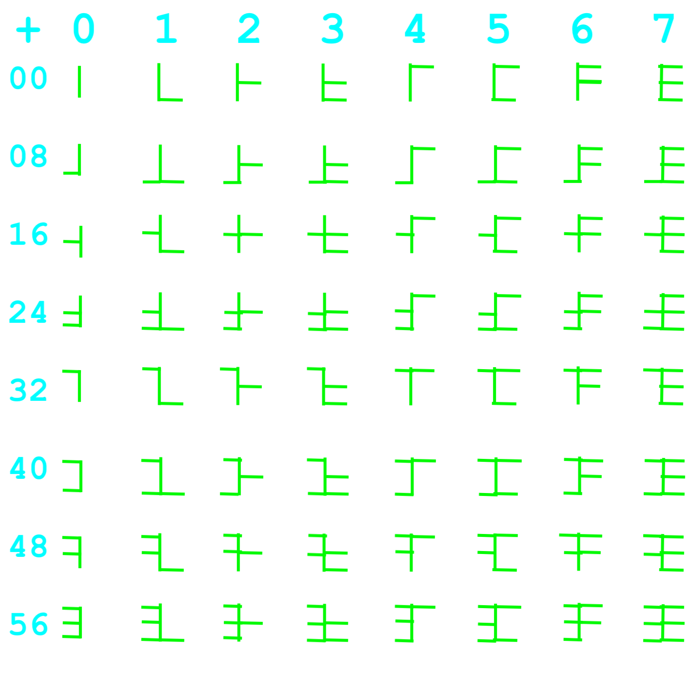

Binário
Binário, abreviado como BIN, é o sistema de numeração de base 2DEC. O nome é de origem latina. Embora seja de grande importância para a computação moderna, poucas pessoas defendem o seu uso geral.
Atualmente, praticamente todos os computadores usam esse sistema. As operações matemáticas mais simples são triviais, já que todas as somas e produtos entre números de um algarismo são triviais, e as operações básicas podem ser reduzidas a adições e multiplicações de um algarismo. No entanto, como números em binário são tão grandes, as oportunidades de erro são muito mais frequentes para um humano. Por isso, outras bases como quaternário ou hex são usadas de como intermediárias.
No sistema de numeração binário, os primeiros números naturais tem a seguinte importância:
| n | Tipo | Nível | |
|---|---|---|---|
| DEC | BIN | ||
| 1 | 1 | Primária | 0 |
| 2 | 10 | Primária | 1 |
| 3 | 11 | Secundária | 2 |
| 4 | 100 | Primária | 2 |
| 5 | 101 | Secundária | 4 |
| 6 | 110 | Terciária | 3 |
| 7 | 111 | Secundária | 3 |
| 8 | 1000 | Primária | 3 |
| 9 | 1001 | Secundária | 6 |
| 10 | 1010 | Terciária | 5 |
| 11 | 1011 | Secundária | 10 |
| 12 | 1100 | Terciária | 4 |
A maior parte dos números que não são potências de 10BIN têm nível de importância bastante baixo. Isso ocorre porque, sendo 10BIN um número primo, suas potências só tem outras potências de 10BIN como divisores, limitando a importância primária apenas a esses números. Isso torna binário uma base inconveniente para aritmética por humanos.
Como o sistema de numeração binário só precisa de dois algarismos, eu gosto bastante do uso de sistemas semelhantes a binário na construção dos próprios caracteres dos algarismos. Um sistema numérico de base até 64DEC(1000000BIN) poderia usar os seguintes algarismos:
